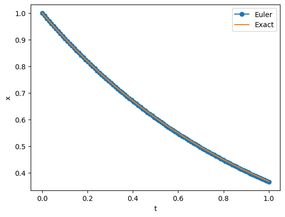
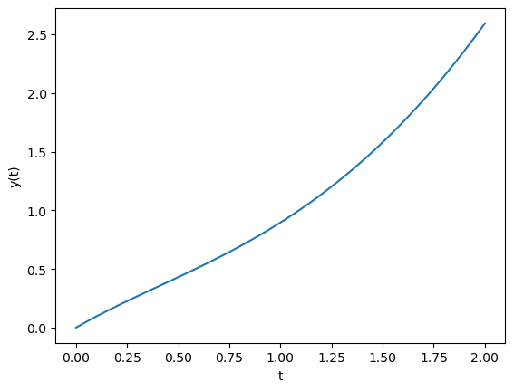

Las ecuaciones diferenciales se caracterizan por tener multiples aplicaciones en casi todas las áreas del conocimiento. En algunos “pocos” casos se puede encontrar la solución analítica de las mismas, por lo general se aproxima la soluciones de las ecuaciones diferenciales usando métodos numéricos. Los métodos más simples es el método de Euler (implícito y explicito), el cual lo vamos a deducir en este notebook.
Método de Euler
Supongamos que tenemos la ecuación diferencial ordinaria (EDO) de primer orden:
\[\frac{dy}{dt} = f(t,y)\] para \(t \in [t_0, t_f]\) y \(y(t_0) = y_0\).
podemos integrar la ecuación diferencial de la siguiente manera:
\[\int_{t_0}^{t_f} \frac{dy}{dt} dt = \int_{t_0}^{t_f} f(t,y) dt\] e usando el primer teorema del cálculo obtenemos:
\[y(t_f) - y(t_0) = \int_{t_0}^{t_f} f(t,y) dt\]\[y(t_f) = y(t_0) + \int_{t_0}^{t_f} f(t,y) dt\] de esta forma podríamos buscar alguna alternativa para aproximar la integral, lo cual nos lleva a la siguiente aproximación:
\[\int_{t_0}^{t_f} f(t,y) dt \approx f(t_0,y_0) \Delta t,\] de esta forma obtenemos que el valor de \(y\) en el tiempo \(t_f\) es:
\[y(t_f) \approx y(t_0) + f(t_0,y_0) \Delta t.\]
Si usamos este porcedimiento de forma iterativa podemos obtener la solución de la EDO en el intervalo \([t_0, T ]\), de la siguiente manera:
Generar una partición del intervalo \([t_0, T ]\) con \(N\) puntos, es decir, \(t_0, t_1, t_2, \dots, t_N\).
Usando la aproximación anterior podemos obtener el valor de \(y\) en cada uno de los puntos de la partición, de la siguiente manera:
\[y_{i+1} = y_i + f(t_i,y_i) \Delta t,\]
para \(i = 0, 1, 2, \dots, N-1\). 3. Obtenemos la solución aproximada de la EDO es la lista de valores \(y_0, y_1, y_2, \dots, y_N\).
Ejemplo
Consideremos la siguiente EDO:
\[\frac{dy}{dt} = -y\] para \(t \in [0, 1]\) y \(y(0) = 1\).
La solución analítica de esta EDO es:
\[y(t) = e^{-t}.\]
import numpy as npimport matplotlib.pyplot as pltdef ode_euler(f, x0, t):"""Approximate the solution of x' = f(x,t) by Euler's method. Parameters ---------- f : function Right-hand side of the differential equation x' = f(x,t), x(t0)=x0 x0 : number Initial value of x t : array 1D NumPy array of t values where we approximate x values. Time step at each iteration is given by t[n+1] - t[n]. Returns ------- x : 1D NumPy array Approximation of the solution at values `t` with x[0] = x0. """ x = np.zeros(len(t)) x[0] = x0for n inrange(0, len(t) -1): x[n +1] = x[n] + f(x[n], t[n]) * (t[n +1] - t[n])return xdef f(x, t):return-xt,h = np.linspace(0, 1, 100, retstep=True)x = ode_euler(f, 1, t)plt.plot(t, x, 'o-', label='Euler')plt.plot(t, np.exp(-t), label='Exact')plt.legend(loc='upper right')plt.xlabel('t')plt.ylabel('x')plt.show()

Euler implicito
Note si cambiamos la aproximación de la integral por
obtenemos el método de Euler implicito, el cual es:
\[y_{i+1} = y_i + f(t_{i+1},y_{i+1}) \Delta t,\] si usted observa detenidamente este método es implicito porque \(y_{i+1}\) aparece en ambos lados de la ecuación. Para aproximar \(y_{i+1}\) podemos usar el método de Newton, de esta forma obtenemos el siguiente método:
Generar una partición del intervalo \([t_0, T ]\) con \(N\) puntos, es decir, \(t_0, t_1, t_2, \dots, t_N\).
Crear una función auxiliar \(g(y_{i+1}) = y_{i+1} - y_i - f(t_{i+1},y_{i+1}) \Delta t\). Aquí en esta función tenemos que usar el método de Newton para encontrar la raíz de la función \(g\), usando como punto inicial \(y_i\) y como tolerancia \(tol=10^{-10}\).
La raíz de la función \(g\) es \(y_{i+1}\) es la nueva aproximación de la solución de la EDO. De esta forma hemos construido la aproximación de la solución de la EDO en los puntos \(t_0, t_1, t_2, \dots, t_N\).
Ejemplo
Vamos a modificar el ejemplo anterior para usar el método de Euler implícito.
import numpy as npimport matplotlib.pyplot as pltdef sol_newton(gg,dgg, x0,t1,dt, tol=1e-10):""" Find a solution of f(x)=0 given an initial approximation x0. Parameters --- f : function Function for which we are trying to find a solution f(x)=0. df : function Derivative of f(x). x0 : number value of x in the n step t1 : number value of t in the n+1 step tol : number Returns --- x : number Approximate solution satisfying f(x)=0 within the given tolerance. True if the algorithm converged and False otherwise. """ max_iter =400 x = x0for i inrange(max_iter):if dgg(x,x0,t1,dt)==0: x=np.nan sol=Falsereturn x,sol x = x - gg(x,x0,t1,dt)/dgg(x,x0,t1,dt)ifabs(gg(x,x0,t1,dt)) < tol: sol=Truereturn x,sol x=x0 sol=False x=np.nanreturn x,soldef g(x,x0,t1,dt):''' Function to find the root of the implicit equation Parameters --- x : number value of x in the n+1 step x0 : number value of x in the n step t1 : number value of t in the n+1 step --- Return valune of the function '''return x - x0 - f(x, t1)*dtdef dg(x,x0,t1,dt):''' Derivate of function to find the root of the implicit equation parameters --- x : number value of x in the n+1 step x0 : number value of x in the n step t1 : number value of t in the n+1 step Returns ---- value of the derivative of the function '''return1.0- df(x, t1)*dtdef ode_euler_impl(f,df,x0,t):"""Approximate the solution of x' = f(x,t) by implicit Euler's method. Parameters ---------- f : function Right-hand side of the differential equation x' = f(x,t), x(t0)=x0 df : function Derivative of f(x,t) with respect to x x0 : number Initial value of x t : array 1D NumPy array of t values where we approximate x values. Time step at each iteration is given by t[n+1] - t[n]. Returns ------- x : 1D NumPy array Approximation of the solution at values `t` with x[0] = x0. """ x = np.zeros(len(t)) x[0] = x0for n inrange(0, len(t) -1): dt= (t[n +1] - t[n]) x_tem, sol = sol_newton(g,dg, x[n],t[n+1],dt,tol=1e-10)if sol==False:print("No se pudo encontrar la solución")break x[n +1] = x_temreturn x## Function f(x,t)def f(x, t):return-x## Derivate of función f(x,t) with respect to xdef df(x, t):return-1.0t,h = np.linspace(0, 1, 100, retstep=True)x = ode_euler_impl(f, df,1, t)plt.plot(t, x, 'o-', label='Euler')plt.plot(t, np.exp(-t), label='Exact')plt.legend(loc='upper right')plt.xlabel('t')plt.ylabel('x')plt.show()
df(1.0,3)
-1
Método del Trapecio
Ahora si usamos la aproximación de la integral por el método del trapecio obtenemos el siguiente método:
Ejercicio 1. Implemente el método del trapecio para resolver la EDO del ejemplo anterior.
Encuentre la solución de la EDO usando el método de Euler explicito, implícito y el método del trapecio.
Grafique la solución analítica y las soluciones aproximadas usando los tres métodos.Sin título
Solucione la siguiente EDO usando el método de Euler explicito, implícito y el método del trapecio. \[\frac{dy}{dt} = -y + t^2 \] para \(t \in [0, 1]\) y \(y(0) = 0\).
Calcule la solución exacta usando sympy (ver el siguiente ejemplo) y calcule el error de cada método.
import sympy as sp# Define the symbolst = sp.symbols('t')y = sp.Function('y')(t)# Define the ODEode = sp.Eq(y.diff(t), -y + t**2+1)# Solve the ODEsol = sp.dsolve(ode, y)# Find the constant using the initial conditionC_eq = sp.Eq(sol.rhs.subs(t, 0), 0)C_sol = sp.solve(C_eq)# Substitute the constant into the solutionsol = sol.subs('C1', C_sol[0])print("The solution to the ODE is:", sol)sol
The solution to the ODE is: Eq(y(t), t**2 - 2*t + 3 - 3*exp(-t))
Solucione la siguiente EDO usando el método de Euler explicito, implícito y el método del trapecio. \[\frac{dy}{dt} = -\lambda(y-\cos(t))-\sin t\] Note que la solución de la ecuación diferencial es \(y(t) =\cos t\), para \(t \in [0, 1]\) y \(y(0) = 0\) y \(\lambda=\pm 1,\pm 10,\pm 100\)
Ecuaciones rígidas
Las ecuaciones diferenciales rígidas son aquellas que tienen soluciones que varían rápidamente en un intervalo pequeño y lentamente en un intervalo grande. Por ejemplo, considere la siguiente EDO: \[\frac{dy}{dt} = \lambda y\] para \(t \in [0, 1]\) y \(y(0) = 1\). Note que para \(\lambda\) grande la ecuación varia rápidamente en un intervalo pequeño y lentamente en un intervalo grande. La ecuaciones rígidas no se pueden aproximar usando métodos explícitos como el método de Euler explicito, ya que el paso de integración debe ser muy pequeño para que el método sea estable. Por lo general se usan métodos implícitos para resolver ecuaciones rígidas.
Método de Runge-Kutta de orden 4
El método de Runge-Kutta de orden 4 es un método de Runge-Kutta de la siguiente forma:
Este método es de cuarto orden de aproximación y es explicito.
Ejercicio
Implemente el método de Runge-Kutta de orden 4 para resolver la EDO del ejemplo anterior.
Libreria scipy.integrate
La libreria scipy.integrate tiene funciones para resolver ecuaciones diferenciales ordinarias. En particular tiene la función odeint es una librería que se usa para resolver ecuaciones diferenciales ordinarias la cual usa la librería odepack de FORTRAN. Actualmente esta librería esta en desuso y se recomienda usar la función solve_ivp ode_ivp, que la cual usted puede escoger el método de integración que desea usar. En el siguiente ejemplo vamos a usar la función odeint para resolver la EDO del ejemplo anterior.
import numpy as npfrom scipy.integrate import odeint# Define the ODEdef dydt(y, t):return-y + t**2+1# Define the initial conditiony0 =0# Define the time points where the solution is computedt = np.linspace(0, 2, 100)# Solve the ODEy = odeint(dydt, y0, t)# Plot the solutionimport matplotlib.pyplot as pltplt.plot(t, y)plt.xlabel('t')plt.ylabel('y(t)')plt.show()

import numpy as npfrom scipy.integrate import solve_ivpimport matplotlib.pyplot as plt# Define the ODEdef dydt(t, y):return-y + t**2+1# Define the initial conditiony0 = [0]# Define the time spant_span = [0, 2]# Solve the ODE using the Runge-Kutta methodsol = solve_ivp(dydt, t_span, y0, method='RK45', t_eval=np.linspace(*t_span, 100))# Plot the solutionplt.plot(sol.t, sol.y[0])plt.xlabel('t')plt.ylabel('y(t)')plt.show()